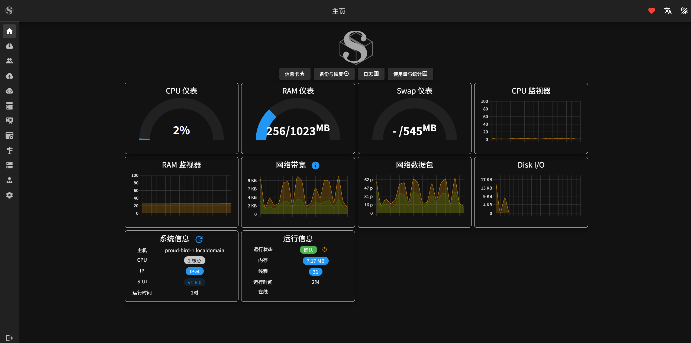
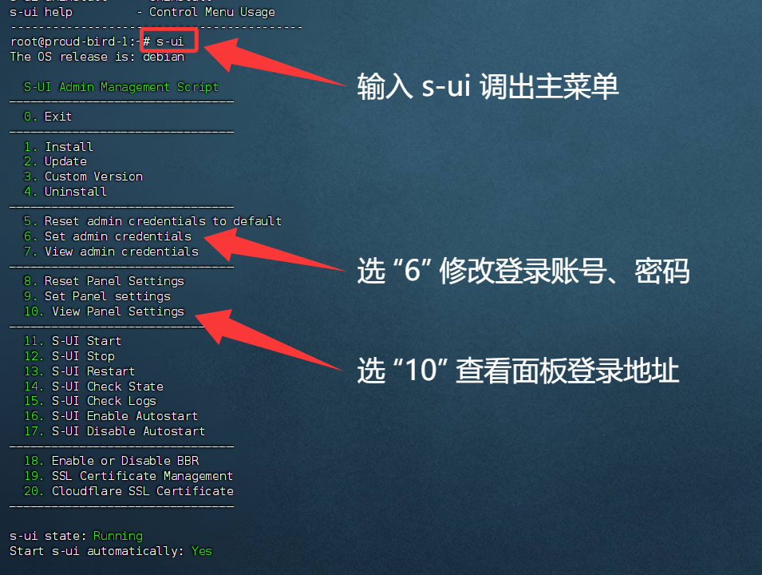
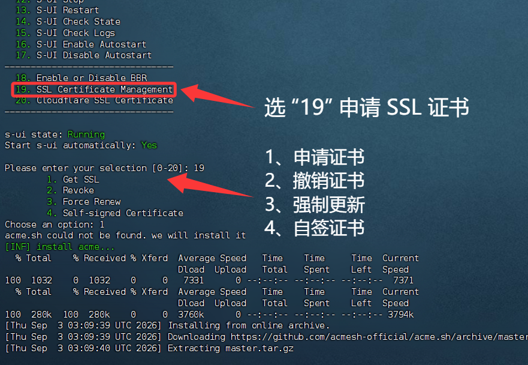
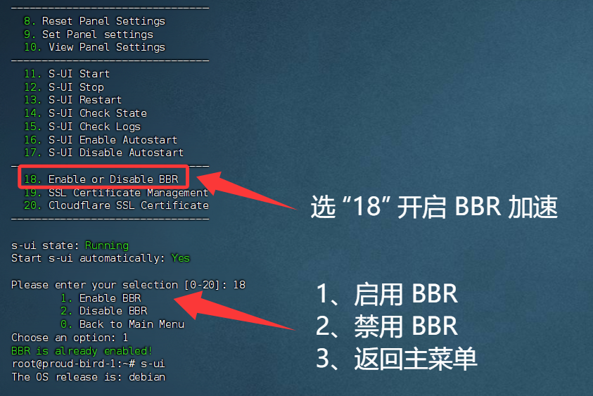

🕓2026年09月3日
🎥视频教程：▶点击这里观看视频教程
一、什么是 S-ui 面板？
S-ui 是基于 Sing-box 内核的可视化 Web 管理面板（相当于 Sing-box 版的 3X-UI）。它将复杂的代码配置转化为网页操作，无需手搓代码，点点鼠标即可搭建 VLESS、Hysteria 2、TUIC 等全套科学上网协议。
S-ui 面板 5 大核心特点：
S-UI 开源项目地址：>>点击进入项目

二、准备工作
1、VPS 一台：重置好主流操作系统（推荐 Debian 12）
搬瓦工 VPS 注册网址：点击查看 CN2 GIA 高级优化线路 | 更多产品页面
六六云VPS注册网址：https://kjxl.cc/666clouds（双ISP，支持tiktok）
全站九折优惠：XL666
年付七折优惠：year30off
Vultr 注册网址：https://kjxl.cc/vultr （按时计费，最低6$/月。）
PS：搭建前，先检测服务器IP是否被封，确认IP可用。
已经解析的域名，按键盘 Win+R ，输入 CMD 回车：键入 ping 空格输入你的域名，检查一下是否可以 ping 通。
2、域名一个：将域名托管到 Cloudflare ，请参考 这篇文章 购买并托管域名。
推荐在 Namesilo 进行购买（新用户1美元优惠券：kejixiaolu），因为他的 WHOIS 隐私 是免费的，可以适当的进行一下隐私保护，而且域名还都挺便宜的。（域名可以在 Namesilo 解析，也可以将域名托管到 Cloudflare ，解析更快。）
3、SSH 工具
下载安装 FinalShell 工具下载地址：>>点此下载 Windows、macOS、Linux 版
三、一键部署 S-UI 面板
复制 bash <(curl -Ls https://raw.githubusercontent.com/alireza0/s-ui/master/install.sh)

四、申请SSL证书
输入数字 “19” SSL 证书管理，接下来输入“1” Get SSL 申请证书，注意：这里需要放行80端口。

证书会自动续期，无需手动操作。如需手动更新，可以在申请证书处选择 “3” 强制更新证书。
五、BBR 加速
输入“18” 启用或禁用 BBR ，再根据提示再输入“1”启用 BBR。

验证 BBR 是否成功启用：
执行以下命令，确认 BBR 已被启用：
复制 sysctl net.ipv4.tcp_available_congestion_control
输出结果应包含 bbr，表示 BBR 已成功启用。
六、配置节点使用
面板设置路径：
设置——TLS——入站管理——用户管理
操作步骤较多，Anytls | Hysteria2 | VLESS + Reality 节点参数设置，请 观看视频
七、客户端下载
v2rayN（电脑端）：【点击进入】
Clash Meta for Android（安卓端）：【点击进入】
Shadowrocket（IOS端）：注册免费美区苹果ID教程 OR 购买美区 Apple ID 成品
八、放行端口操作
请务必放行相关端口：3X-UI面板端口 / 80 / 443，放行指令：
复制
iptables -I INPUT -p tcp --dport 端口 -j ACCEPT
💡 提示： 为避免端口被拦截导致节点无法连通，自建节点建议直接执行以下命令一键关闭防火墙（生产环境/建站服务器请慎用）：
复制
iptables -P INPUT ACCEPT && iptables -P FORWARD ACCEPT && iptables -P OUTPUT ACCEPT && iptables -F
九、常见问题与解决
问题1：SSL 证书申请失败
问题2：V2rayN 导入节点测速显示 -1
📌 总结
这个搭建过程适合初学者，步骤清晰，问题少。如果你在搭建过程中遇到其他问题，可以在评论区留言，我会尽力帮助解决。
希望这篇文章对你有帮助！如果觉得有用，记得点赞收藏哦~
🚀 下一期预告
👉 S-UI 与 3X-UI 两种面板共存搭建教程（新手可直接照做）
3X-UI 入门搭建教程：点击教程